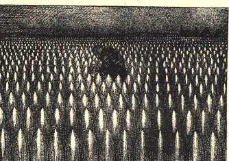
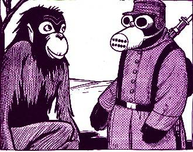

Huiswerk WOI Deel 2
- De moord op aarsthertog Frans Ferdinand was een directe oorzaak voor het uitbreken van de Eerste Wereldoorlog. Hoe noemen we een directe oorzaak ook wel?
- De moord werd uitgebvoerd door servische Nationalisten. Wat wilde deze serven?
- Oostenrijk-Hongarije stuurt naar de aanslag een ultimatum aan Servië. Wat is een ultimatium en wat was de eis van Oostenrijk-Hongarij?
- Nadat Servië dit ultimatum overschreidt kan de oorlog snel uit de hand lopen vanwege de Europese bondgenootschappen. Welke bondgenootschappen waren dit en hoe zagen zij er uit?
- Toen de oorlog uitbrak liep deze in West-Europa vast in een loopgravenoorlog. Loopgraven werden in andere oorlogen ook al gebruikt, waarom werden deze tijdens WOI veel meer en langer gebruikt?
- Het boek noemt de beruchte slagen bij Verdun en De Somme in 1916. Waarom zijn deze slagen berucht?
- In Nederland tekende Albert Hahn sportprenten over de verschrikkingen. Bekijk onderstaande spotprent. De tekenaar noemde de tekening: 'De Aarde tijdens de Lente'. schrijf een uitleg bij deze prent, waarin je duidelijk maakt wat de tekenaar zegt met de afbeelding en de titel.

- Hieronder zie je nog een spotprent van Hahn waarin hij kritiek heeft op de oorlog. De titel van de spotprent is: 'De ontwikkeling van de mens: van mens-aap tot aap-mens'. Eigen wil Hahn zeggen dat er tussen de twee figuren geen ontwikkeling zit, hoe laat hij dat zien?
